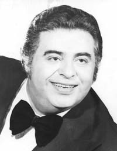
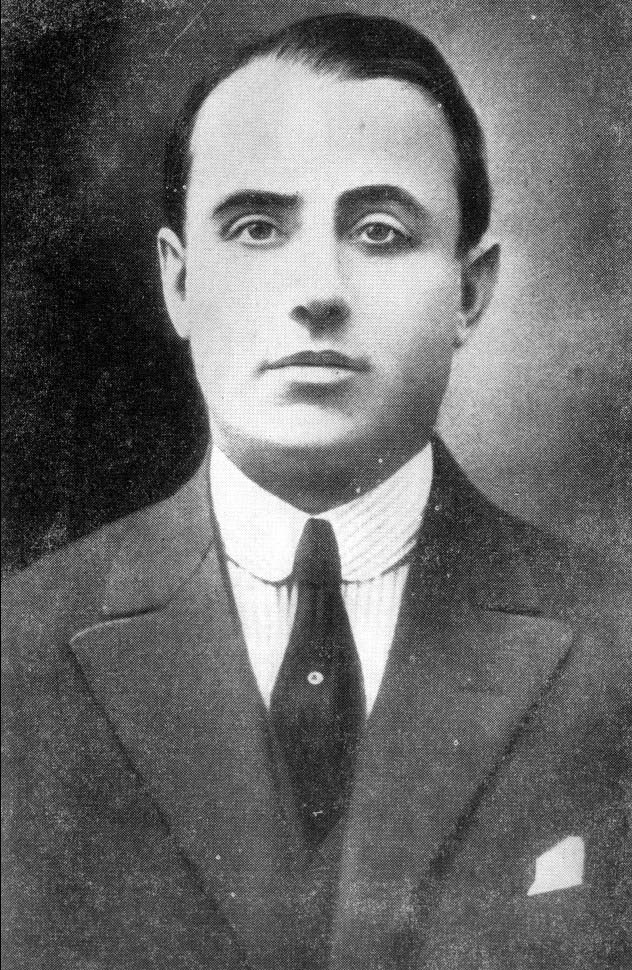
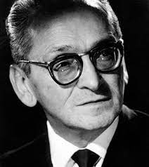

Historia
En 1871 una epidemia de fiebre amarilla azotó la ciudad de Buenos Aires por lo que fue necesaria la construcción de cementerios ya que los existentes (en particular el Cementerio del Sud, actual Parque Ameghino) no daban abasto y el Cementerio del Norte (actualmente Cementerio de la Recoleta) había prohibido que se inhumen allí a quienes habían muerto por la epidemia. El nombre del barrio, que da nombre al cementerio, nace del diminutivo de Chácara o Chacra, voz quechua que significa "granja", "quinta" o "fundo". En este caso, se trataba de la Chacra del Colegio que la Compañía de Jesús tenía en las afueras de la ciudad de Buenos Aires hacia mediados del siglo xviii. Por ello se la conocía como "la chacrita" o "chacarita de los colegiales". Se creó el Tranvía Fúnebre, que fue utilizado para llegar al cementerio, y se inauguró la llamada Estación Fúnebre en la intersección de las calles Bermejo (actualmente Jean Jaurès) y Avenida Corrientes, donde se recibían los ataúdes. El cementerio contaba con condiciones de higiene mínimas y sumado a la gran cantidad de víctimas que causó la epidemia, se llegaron a cremar 564 cadáveres en un día y según testimonios en un día murieron 14 empleados. Pero los olores y la falta de salubridad molestaban a los vecinos del barrio. Por esta razón el cementerio fue clausurado en 1875, pero siguió funcionando hasta el 9 de diciembre de 1886, cuando se lo clausuró definitivamente. Al colapsar el cementerio del sur, se tuvo que inaugurar el cementerio de la Chacarita. Fue construido en tan solo un año, un tiempo récord.
Arquitectura
Si bien los mausoleos y tumbas que se encuentran en el interior de este cementerio contienen arquitecturas y estilos muy diversos, sí podemos hablar de la fachada del Cementerio de la Chacarita: posee una influencia totalmente griega. Su entrada es de orden dórico griego. Esto se hace notar en sus abundantes columnas robustas, fuste con surcos pronunciados y terminación puntiaguda; los capiteles sobrios sin decoración y sin basamento alguno en el extremo inferior. En el entablamento se pueden apreciar los triglifos y las metopas intercalados en el friso. Ubicado en el frontón se hace notar un relieve representando a Dios, custodiado por cuatro ángeles, bajando al mundo de los vivos para proporcionarles su misericordia y yendo a buscar a los muertos. Este relieve posee una fuerte influencia helenística (posteriormente desarrollada por los griegos). Coronando la sima aparece una escultura en representación del Arcángel Gabriel sosteniendo su trompeta y señalando al cielo donde se encuentran los aposentos de Dios, que también posee estilo griego helenístico que se nota en el movimiento del ropaje y la animación de su rostro.
La arquitectura y el desarrollo de los mausoleos y tumbas subterráneas fue llevada a cabo por quien hoy es considerada una de las primeras arquitectas del país, Ítala Fulvia Villa. El panteón subterráneo contiene nichos construidos en horizontal, el estilo de esta obra es considerada como arquitectura brutalista.
Información General
El Cementerio de Chacarita tiene una extensión de 95 hectáreas y está compuesto por 10.000 bóvedas privadas que ocupan las primeras 4 manzanas, 105 panteones, 94.000 sepulturas y más de 350.000 nichos. Además cuenta con capillas y crematorios. El cementerio de la Chacarita se destaca por su impronta popular, a diferencia de la Recoleta que es considerado el cementerio de las familias aristocráticas. En el cementerio se encuentran diferentes panteones que perteneces a asociaciones y organizaciones como por ejemplo el panteón de la Asociación Argentina de Actores. También se destaca el Sexto Panteón, la monumental obra que diseñó la Arquitecta Itala Fulvia.
Horarios
El cementerio abre todos los días de 7:30 a 17 hs. El horario de atención al público para trámites es de 7:30 a 13:30 hs.
Famosos que se encuentran en Chacarita
Carlos Gardel
Jorge Porcel
Jorge Newbery
Gilda
Osvaldo Pugliese
Bibliografía
- es.wikipedia.org
- www.buenosaires123.com.ar
- turismo.buenosaires.gob.ar
- actualizacionesturismo.blogspot.com
- www.google.com/maps

Como Llegar
Dirección: Av. Guzmán 680, Chacarita (a metros de Av. Corrientes y Federico Lacroze).
Llegar en colectivo: 19, 39, 42, 44, 47, 63, 65, 71, 76, 78, 87, 90, 93, 108, 111, 112, 123, 127, 176 y 184.
Llegar en Subte:Línea B-Estación Federico Lacroze.
Llegar en tren: Tren Urquiza, estación Federico Lacroze / Tren San Martín, estación Chacarita - Villa Crespo (caminar a 10 cuadras).